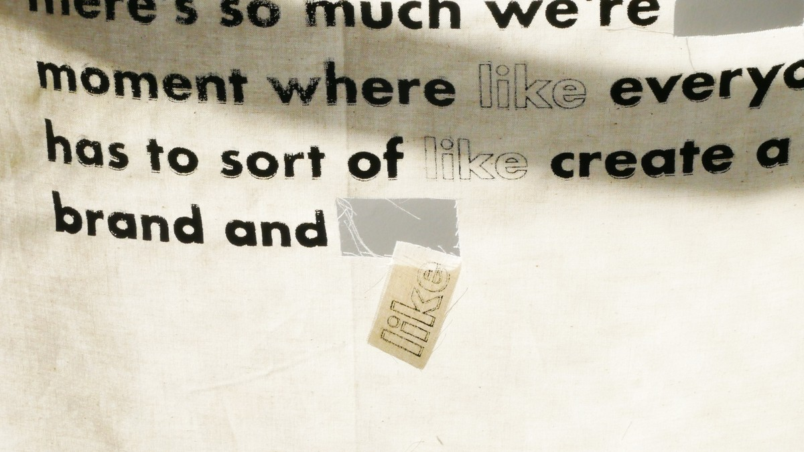
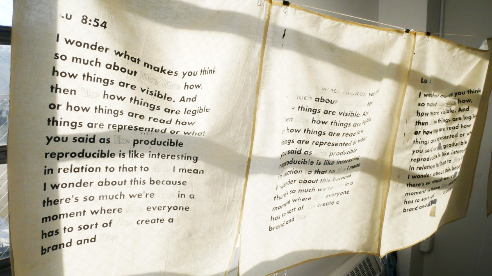
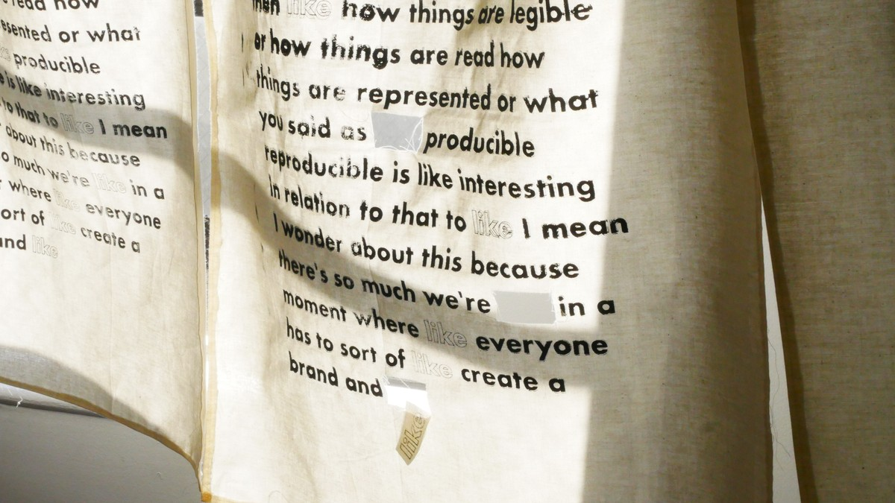
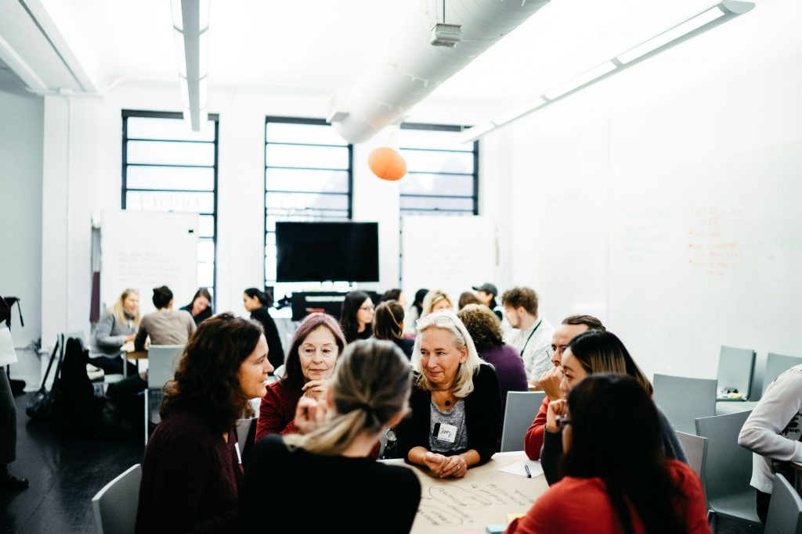

Jul 2026
Making Complex AI Systems Usable Across Teams
A podcast conversation on turning solo AI experiments into shared research infrastructure at DoorDash.
Listen on The ResearchOps ReviewI'm a senior researcher at DoorDash, where I use mixed-method research to build 0-to-1 products. Lately that's meant creating dining out as a new category from the ground up, and shaping a set of affordable food options for everyday eaters. I'm also developing research eval practices, making sure real users and all our messy, human multitudes stay in the loop as we build AI/LLM products. I find joy in poking at research methods and making new tools.
Jul 2026
A podcast conversation on turning solo AI experiments into shared research infrastructure at DoorDash.
Listen on The ResearchOps Review
Deconstructed interview transcriptssilkscreen on muslin · Parsons

Deconstructed interview transcriptssilkscreen on muslin · Parsons

Deconstructed interview transcriptssilkscreen on muslin · Parsons
Movie DNA, decoded. Match films by the emotional wreckage they leave behind: found family, revenge arcs, one bad wedding.
subplotly.comCurrently
Previously
Education

End of Life Festivalpublic workshop · New York